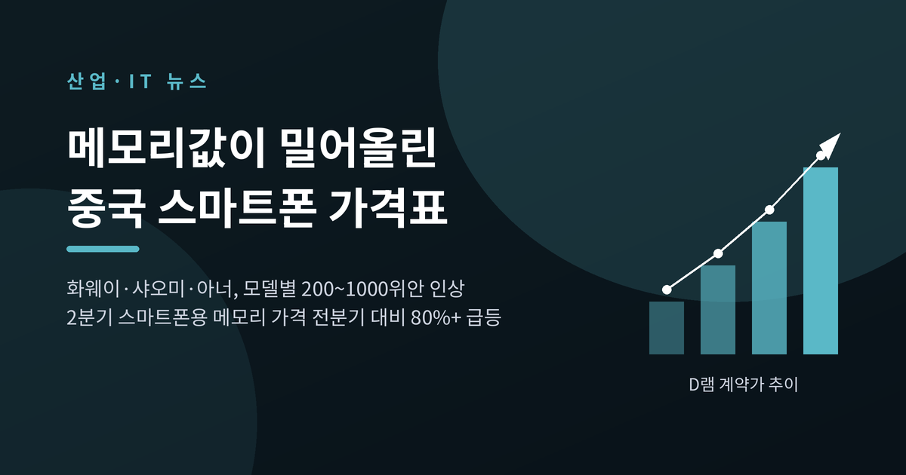
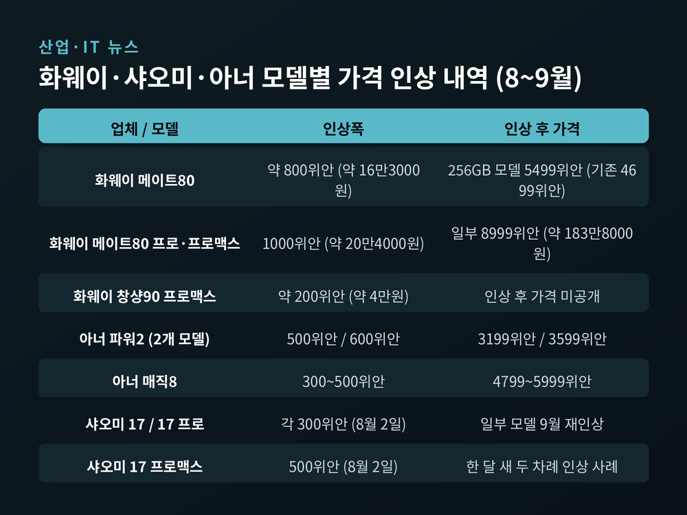
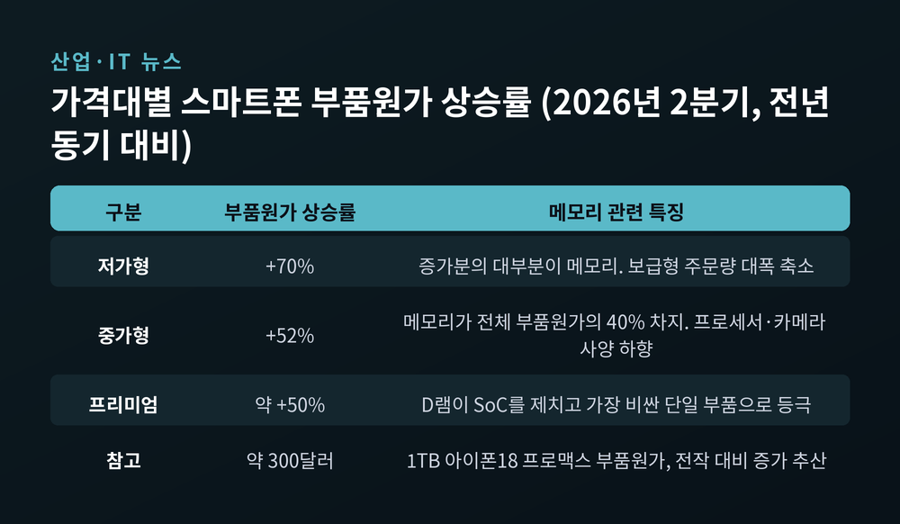
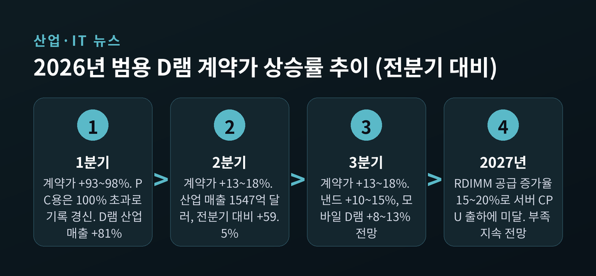
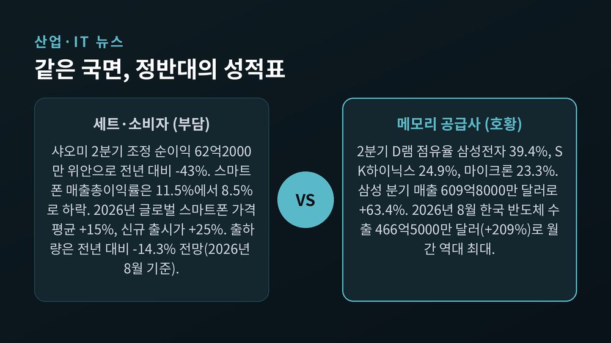
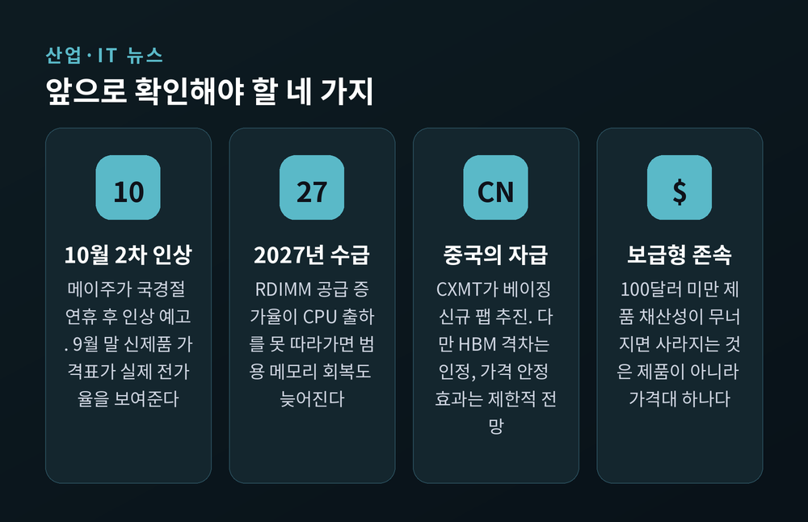

메모리 가격 급등, 화웨이·샤오미 스마트폰 값 최대 20만원 올랐습니다

이번 글에서는 메모리 가격 급등이 어떻게 소비자 가격표까지 옮겨붙었는지 정리해 보겠습니다. 9월 1일 중국 주요 스마트폰 업체들이 일제히 판매가를 올렸고, 그 뒤에는 AI 서버가 삼켜버린 D램이 있습니다.
먼저 세 줄로 요약하겠습니다. 첫째, 화웨이·샤오미·아너가 모델에 따라 200위안에서 1000위안, 우리 돈 약 4만원에서 20만원까지 값을 올렸습니다. 둘째, 2026년 2분기 스마트폰용 메모리 가격은 전분기 대비 80% 이상 뛰었고, 저가형 스마트폰의 부품원가는 1년 만에 70% 늘었습니다. 셋째, 같은 국면이 메모리를 만드는 쪽에는 기록적인 호황으로, 완제품을 만드는 쪽에는 마진 붕괴로 나타나고 있습니다.
수치와 날짜는 시장조사기관 발표와 확인된 보도만 사용했습니다. 확인되지 않은 이야기는 그렇다고 밝히겠습니다.
무슨 일이 있었나 — 세 브랜드가 같은 날 가격표를 바꿨습니다
2026년 9월 1일, 중국 경제매체 제일재경이 한 가지 사실을 전했습니다. 화웨이와 샤오미, 아너가 판매가격을 잇달아 올리고 있으며 많게는 1000위안, 약 20만4000원가량 올랐다는 내용입니다.
품목을 하나씩 보겠습니다.
화웨이는 대표 모델 '메이트80'의 가격을 약 800위안, 약 16만3000원 올렸습니다. 256GB 모델은 4699위안에서 5499위안이 됐습니다. 프로와 프로맥스는 모델별로 1000위안씩 올라 일부 제품이 8999위안, 약 183만8000원에 팔렸습니다. 중간 사양인 '창샹90 프로맥스'도 200위안, 약 4만원 인상됐습니다.
아너는 '파워2' 두 모델을 각각 500위안과 600위안 올려 3199위안과 3599위안에 내놨습니다. 플래그십인 '매직8'은 모델별로 300~500위안 올라 지금은 4799~5999위안, 약 97만9000원에서 122만4000원 사이에 팔립니다.
샤오미는 앞서 움직였습니다. 8월 2일 '샤오미 17' 시리즈 가격을 인상했고, 17과 17 프로가 각각 300위안, 17 프로맥스가 500위안 올랐습니다. 그중 일부 모델이 9월에 다시 올랐습니다. 한 달 사이 두 차례 값이 바뀐 셈입니다.

인상은 갑자기 튀어나온 일이 아닙니다. 중국 업체들은 이미 7월부터 조용히 가격을 손보기 시작했습니다. 샤오미는 그보다 앞선 4월 11일에도 주요 3개 모델을 약 200위안씩 올린 적이 있습니다.
특이한 점이 하나 있습니다. 어느 브랜드도 이번 조정에 대해 공식 입장을 내지 않았습니다. 한 유통 채널 관계자는 "온라인에서 먼저 가격을 올리면 오프라인에서도 따라갈 것"이라고 말했습니다.
버티는 쪽도 있었습니다. 메이주는 같은 날 공식 계정에 글을 올려, 가격 인상은 업계 전체가 겪는 일이며 마지막 순간까지 버텼다고 밝혔습니다. 그러면서 한 달만 더 버틴 뒤 국경절 연휴가 지나면 올리겠다고 예고했습니다. 9월 13일 현재 메이주의 판매 모델은 아직 기존 가격을 유지하고 있습니다.
왜 이렇게까지 됐나 — D램이 두뇌칩보다 비싸졌습니다
원인은 부품원가에 있습니다.
시장조사기관 카운터포인트리서치가 7월 30일 내놓은 분석을 보면, 2026년 2분기 스마트폰용 메모리 가격은 전분기 대비 80% 이상 급등했습니다. 그 여파로 부품원가 구조 자체가 뒤바뀌었습니다.
가장 크게 맞은 쪽은 저가형입니다. 같은 사양의 저가형 스마트폰 부품원가는 전년 동기 대비 70% 증가했고, 증가분의 대부분이 메모리였습니다. 중가형은 52% 올랐으며 메모리가 전체 부품원가의 40%를 차지했습니다. 프리미엄 제품도 약 50% 올랐습니다.
여기서 상징적인 역전이 일어났습니다. 프리미엄 스마트폰에서 D램이 SoC를, 그러니까 스마트폰의 두뇌 역할을 하는 프로세서를 제치고 가장 비싼 단일 부품 자리에 올랐습니다.

예전에는 제조사들이 프로세서 값을 놓고 협상했습니다. 지금은 메모리 값을 놓고 사양을 깎습니다. 실제로 중가형 제품군에서는 프로세서와 카메라 사양을 낮추는 움직임이 나타나고 있고, 보급형은 주문량 자체가 대폭 줄었습니다.
당사자의 말은 더 구체적입니다. 루웨이빙 샤오미 그룹 총재는 같은 사양 기준 메모리 가격이 지난해 1분기 대비 최대 4배 가까이 올랐다고 설명했습니다. 실적 발표 자리에서는 계약 가격이 지난해 3분기 이후 약 5배 상승했다고도 말했습니다. 12GB에 512GB를 얹은 구성은 약 1500위안, 16GB에 1TB 구성은 그보다 더 큰 폭으로 올랐다는 것입니다. 그는 이 압박이 2027년, 길게는 2028년까지 이어질 수 있다고 내다봤습니다.
애플도 예외가 아닙니다. 카운터포인트는 1TB 아이폰18 프로맥스의 부품원가가 지난해 같은 용량의 아이폰17 프로맥스보다 약 300달러, 약 41만1000원 비쌀 것으로 추산했습니다.
시작은 AI 서버였습니다
그렇다면 메모리는 왜 이렇게 올랐을까요.
답은 단순합니다. 만드는 쪽이 더 돈이 되는 곳에 생산능력을 몰아줬기 때문입니다.
메모리 회사들은 HBM과 서버용 D램, 기업용 SSD처럼 AI 인프라에 들어가는 제품으로 웨이퍼 생산능력을 옮겼습니다. 그 결과 PC와 태블릿, 스마트폰, 게임기에 쓰이는 범용 메모리 공급이 줄었습니다. 수요가 늘어서 오른 것이 아니라, 만들 자리를 빼앗겨서 오른 면이 큽니다.
계약가 흐름을 보면 속도가 보입니다.
트렌드포스 집계로 2026년 1분기 범용 D램 계약가는 전분기 대비 93~98% 올랐습니다. PC용 D램은 한 분기에 100%를 넘겨 분기 상승률 기록을 새로 썼습니다. 그 힘으로 1분기 D램 산업 매출은 전분기보다 81% 늘었습니다.
2분기도 멈추지 않았습니다. 9월 7일 발표에 따르면 2분기 D램 산업 매출은 약 1547억3000만 달러로 전분기 대비 59.5% 증가했습니다. 공급 확대가 수요 증가를 여전히 따라잡지 못하고 있다는 진단이 함께 붙었습니다.
3분기 전망은 조금 다릅니다. 트렌드포스는 범용 D램 계약가가 전분기 대비 13~18%, 낸드가 10~15%, 모바일 D램이 8~13% 오를 것으로 봤습니다. 상승률 자체는 둔화됐습니다. 이유가 중요합니다. 계약가가 사상 최고치에 이르면서 PC와 스마트폰 같은 소비자 시장 고객들이 감당 한계에 도달했다는 것입니다.

한 가지 덧붙일 구조가 있습니다. 미국의 주요 클라우드 사업자들은 다년 장기공급계약을 맺어 두었습니다. 공급사는 이들에게 가격을 올리지 못합니다. 그래서 3분기부터 인상 부담은 장기계약이 없는 고객과 계약 밖 추가 물량 쪽으로 옮겨가고 있습니다.
쉽게 말하면 이렇습니다. 협상력이 약한 쪽이 더 많이 냅니다. 중국의 중소 제조사와 그 제품을 사는 소비자가 바로 그 자리에 서 있습니다.
한편 9월 3일 오픈AI가 공개한 'GPT-6 아스트라'가 AI 설비투자 기대를 다시 자극했다는 평가도 나옵니다. 다만 이 발표가 메모리 가격을 직접 끌어올렸다는 인과관계는 확인되지 않았습니다. 심리에 영향을 줬다는 수준으로 읽는 편이 정확합니다.
누가 웃고 누가 우는가
같은 사건이 정반대의 결과를 냅니다.
먼저 웃는 쪽입니다. 2026년 2분기 D램 시장 점유율은 삼성전자 39.4%, SK하이닉스 24.9%, 마이크론 23.3%였습니다. 삼성전자의 분기 매출은 609억8000만 달러로 전분기보다 63.4% 늘었고, 마이크론은 65.5%, SK하이닉스는 37.9% 증가했습니다. 중국 CXMT도 범용 D램 매출이 99.3% 뛰며 4위권에 올랐습니다.
국가 단위 통계에도 그대로 찍힙니다. 2026년 8월 한국의 수출은 982억5000만 달러로 전년 같은 달보다 68.7% 늘었고, 이 가운데 반도체가 466억5000만 달러를 차지해 월간 역대 최대를 기록했습니다. 증가율은 209%였고, 3개월 연속 400억 달러를 넘겼습니다.
이제 우는 쪽입니다. 샤오미의 2026년 2분기 조정 순이익은 62억2000만 위안으로 전년 대비 43% 줄었습니다. 스마트폰 사업 매출은 421억 위안으로 7.5% 감소했고, 스마트폰 부문 매출총이익률은 11.5%에서 8.5%로 떨어졌습니다. 전사 매출총이익률도 22.5%에서 19.8%로 내려갔습니다.
더 아래쪽은 더 아픕니다. 시장조사기관 옴디아는 100달러 미만 스마트폰의 메모리 비용이 3분기 400%까지 오를 수 있다고 봤고, 그 원가로는 100달러 미만 제품을 만들어 이윤을 남기는 것이 사실상 불가능하다고 분석했습니다.

소비자 쪽 숫자도 남겨두겠습니다. 카운터포인트는 2026년 전 세계 스마트폰 가격이 평균 15% 올랐고, 전체 모델 10개 중 4개 이상이 가격을 인상했으며, 신규 출시 제품의 평균 가격 상승률은 25%에 이른다고 밝혔습니다. 2026년 스마트폰 평균판매가격은 6.9% 오를 것으로 전망됩니다.
출하량은 반대로 움직입니다. 카운터포인트는 8월 전망에서 2026년 글로벌 스마트폰 출하량이 전년 대비 14.3% 줄어들 것으로 봤습니다. 4월 시점 전망치가 12.4% 감소였으니, 넉 달 사이 더 나빠진 셈입니다. 2027년에도 1.4% 더 줄고 2028년에야 회복이 시작될 것이라는 그림입니다.
스마트폰만의 이야기가 아닙니다. 국내에서도 갤럭시북6 기본 모델이 171만원에서 188만5000원으로 17만5000원 올랐고, 울트라 모델은 최대 90만원 인상됐습니다. 레노버는 씽크패드와 리전 등 주요 라인업 공급가를 15~30% 올렸습니다. 가트너는 2026년 소비자용 PC 평균판매가가 17% 오르고 출하량은 10% 이상 줄어들 것으로 전망했습니다.
2018년과 지금은 무엇이 다른가
메모리 값이 급등한 것은 처음이 아닙니다. 2016년부터 2018년까지 이어진 슈퍼사이클이 있었습니다.
그때는 일반 서버 수요가 주도했고, 약 아홉 개 분기 동안 이어졌습니다. 누적 가격 상승 폭은 90% 안팎으로 분석됩니다. 그리고 늘 같은 방식으로 끝났습니다. 값이 오르면 회사들이 공장을 짓고, 물량이 쏟아지고, 가격이 무너졌습니다.
이번은 결이 다르다는 분석이 많습니다. 해외 분석가들은 2025년부터 2027년까지 D램 가격이 누적 275~300% 오를 것으로 추정합니다. 과거 사이클의 세 배가 넘는 폭이, 세 배 가까이 커진 매출 기반 위에서 일어나고 있다는 평가입니다. 다만 이 수치는 기관 공식 발표가 아니라 시장 추정치라는 점은 감안해야 합니다.
구조적인 차이도 있습니다. 이번 상승은 수요가 늘어난 동시에 범용 제품의 공급 자체가 구조적으로 줄어드는 형태로 진행되고 있습니다. AI 워크로드가 커지는 속도를 웨이퍼 증설이 따라가지 못한다는 것이 여러 기관의 공통 진단입니다.
물론 단정은 이릅니다. 호황이 언제 끝날지 정확히 아는 사람은 없습니다. 트렌드포스가 이미 3분기부터 소비자 시장의 가격 수용 한계를 이유로 상승 둔화를 전망했다는 점도 함께 봐야 합니다.
앞으로 무엇을 지켜볼 것인가
네 가지만 꼽아보겠습니다.
첫째, 10월 이후 중국 시장의 2차 인상입니다. 메이주가 국경절 연휴 이후 인상을 예고했고, 9월 말 중국 브랜드들의 신제품 발표가 몰려 있습니다. 신제품 가격표가 이번 사이클의 실제 전가율을 보여줄 것입니다.
둘째, 2027년 서버 D램 수급입니다. 트렌드포스는 2027년 RDIMM 비트 공급이 전년 대비 15~20% 늘어나는 데 그쳐 서버 CPU 출하 증가를 따라가지 못할 것으로 봤습니다. 공급 부족이 한 해 더 이어진다면 범용 메모리가 돌아올 자리도 그만큼 늦어집니다.
셋째, 중국의 자급 시도입니다. CXMT는 베이징에 D램 신규 공장을 추진하며 DDR5와 LPDDR5X 중심으로 자국 수요를 흡수하고 있습니다. 다만 HBM 격차는 스스로 인정하고 있고, 중국산 물량이 나와도 가격 안정 효과는 크지 않을 것이라는 분석도 함께 나옵니다.
넷째, 보급형 시장의 존속 여부입니다. 100달러 미만 제품의 채산성이 무너지면 사라지는 것은 제품 한 종이 아니라 가격대 하나입니다. 저가 시장에 기대어 스마트폰을 처음 손에 쥐던 사람들이 가장 먼저 영향을 받습니다.

결국 남는 것은 하나입니다.
이번 인상은 특정 회사의 경영 판단이 아니라, AI 데이터센터가 먼저 가져간 부품이 남긴 자리의 문제입니다. 서버에 꽂힐 D램이 늘어난 만큼 보급형 스마트폰에 들어갈 D램이 줄었고, 그 차액이 매장의 가격표로 내려왔습니다.
한쪽에서는 역대 최대 수출이 찍히고, 다른 쪽에서는 가성비라는 단어가 조용히 사라집니다. 같은 원인에서 나온 두 장면입니다.
"AI가 만든 호황의 청구서는 결국 소비자의 계산대에서 마감됩니다."
그래서 지금 휴대폰을 바꿔야 하느냐고 물으신다면, 서두를 이유는 없되 값이 곧 내려올 것이라 기대하지는 마시라고 답하겠습니다.